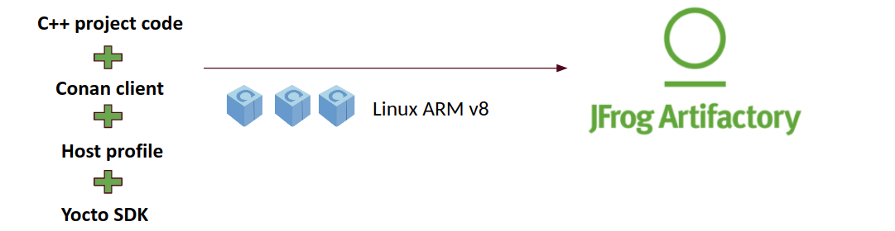

Yocto
Yocto
The Yocto Project is an open-source project that delivers a set of tools that create operating system images for embedded Linux systems. The Yocto Project tools are based on the OpenEmbedded project, which uses the BitBake build tool, to construct complete Linux images.
Yocto supports several Linux host distributions and it also provides a way to install the correct version of these tools by either downloading a buildtools-tarball or building one on a supported machine. This allows virtually any Linux distribution to be able to run Yocto, and also makes sure that it will be possible to replicate your Yocto build system in the future. The Yocto Project build system also isolates itself from the host distribution’s C library, which makes it possible to share build caches between different distributions and also helps in future-proofing the build system.
Integration with Conan
You can create Conan packages building with the Yocto SDK as any other package for other configuration. Those packages can be integrated into a Yocto build installing them from a remote and without compiling them again.
Three stages can be differentiated in the proposed flow:
1. Developers can create an application with the native tools in their desktop platform of choice using their usual IDE, compiler or debugger and test the application.
{kind=link}
Packages can be cross-built for the target device using the Yocto SDK and uploaded to Artifactory, even automated in a CI process.
Once the cross-built packages are available in Artifactory, the application can be directly deployed to the Yocto image. This step can also be automated also in a CI. it from sources again.
{kind=link}
{kind=link}
Creating Conan packages with Yocto’s SDK
Prepare your recipes
First of all, the recipe of the application to be deployed to the final image should have a deploy() method. There you can specify the files of the application needed in the image as well as any other from its dependencies (like shared libraries or assets):
from conans import ConanFile
class MosquittoConan(ConanFile):
name = "mosquitto"
version = "1.4.15"
description = "Open source message broker that implements the MQTT protocol"
license = "EPL", "EDL"
settings = "os", "arch", "compiler", "build_type"
generators = "cmake"
requires = "OpenSSL/1.0.2o@conan/stable", "c-ares/1.14.0@conan/stable"
def source(self):
source_url = "https://github.com/eclipse/mosquitto"
tools.get("{0}/archive/v{1}.tar.gz".format(source_url, self.version))
def build(self):
cmake = CMake(self)
cmake.configure()
cmake.build()
def package(self):
self.copy("*.h", dst="include", src="hello")
self.copy("*.so", dst="lib", keep_path=False)
self.copy("*.a", dst="lib", keep_path=False)
self.copy("*mosquitto.conf", dst="bin", keep_path=False)
def deploy(self):
# Deploy the executables from this eclipse/mosquitto package
self.copy("*", src="bin", dst="bin")
# Deploy the shared libs from this eclipse/mosquitto package
self.copy("*.so*", src="lib", dst="bin")
# Deploy all the shared libs from the transitive deps
self.copy_deps("*.so*", src="lib", dst="bin")
def package_info(self):
self.cpp_info.libs = ["mosquitto", "mosquitopp", "rt", "pthread", "dl"]
Setting up a Yocto SDK
Yocto SDKs are completely self-contained, there is no dependency on libraries of the build machine or tools installed in it. The SDK is a cross-building toolchain matching the target and it is generated from that specific configuration. This means that you will have to use a different SDK toolchain to build for a different target architecture or that some SDK’s may have specific settings to enable some system dependency of the final target and those libraries will be available in the SDK.
You can create your own Yocto SDKs or download and use the prebuilt ones.
In the case that you are using CMake to create the Conan packages, Yocto injects a toolchain that configures CMake to only search for libraries in the rootpath of the SDK with CMAKE_FIND_ROOT_PATH. This is something that has to be patched to allow CMake to find libraries in the Conan cache as well:
set( CMAKE_FIND_ROOT_PATH $ENV{OECORE_TARGET_SYSROOT} $ENV{OECORE_NATIVE_SYSROOT} )
set( CMAKE_FIND_ROOT_PATH_MODE_PROGRAM NEVER )
# COMMENT THIS: set( CMAKE_FIND_ROOT_PATH_MODE_LIBRARY ONLY )
# COMMENT THIS: set( CMAKE_FIND_ROOT_PATH_MODE_INCLUDE ONLY )
# COMMENT THIS: set( CMAKE_FIND_ROOT_PATH_MODE_PACKAGE ONLY )
You can read more about those variables here:
Cross-building Conan packages with the SDK toolchain
After setting up your desired SDK, you can start creating Conan packages setting up the environment of the Yocto SDK and running a conan create command with a suitable profile with the specific architecture of the toolchain.
For example, creating packages for arch=armv8:
The profile will be:
[settings]
os_build=Linux
arch_build=x86_64
os=Linux
arch=armv8
compiler=gcc
compiler.version=8
compiler.libcxx=libstdc++11
build_type=Release
Activate the SDK environment and execute the create command.
$ source oe-environment-setup-aarch64-poky-linux
$ conan create . user/channel --profile armv8
This will generate the packages using the Yocto toolchain from the environment variables such as CC, CXX, LD… Now you can
upload the binaries to an Artifactory server to share and reuse in your Yocto builds.
$ conan upload mosquitto/1.4.15@user/channel --all --remote my_repo
Important
We strongly recommend using the Yocto’s SDK toolchain to create packages as they will be built with the optimization flags suitable to be deployed later to an image generated in a Yocto build.
Deploying an application to a Yocto image
Now that you have your cross-built Conan packages in Artifactory, you can deploy them in a Yocto build.
Set up the Conan layer
We have created a meta-conan layer that includes all the configuration, the Conan client and a
generic BitBake recipe. To add the layer you will have to clone the repository and the dependency layers of meta-openembedded:
$ cd poky
$ git clone https://github.com/conan-io/meta-conan.git
$ git clone --branch thud https://github.com/openembedded/meta-openembedded.git
You would also have to activate the layers in the bblayers.conf file of your build folder:
POKY_BBLAYERS_CONF_VERSION = "2"
BBPATH = "${TOPDIR}"
BBFILES ?= ""
BBLAYERS ?= " \
/home/username/poky/meta \
/home/username/poky/meta-poky \
/home/username/poky/meta-yocto-bsp \
/home/username/poky/meta-openembedded/meta-oe \
/home/username/poky/meta-openembedded/meta-python \
/home/username/poky/meta-conan \
"
Note
Currently there is no support for CONAN_REVISIONS_ENABLED, so remote and virtual Artifactory repositories will not work in this
case. We will continue working on this layer to support more features.
Please report any question, feature request or issue related to the meta-conan layer in its
GitHub issue tracker.
Write the Bitbake recipe for the Conan package
With the meta-conan layer, a Conan recipe to deploy a Conan package should look as easy as this recipe:
inherit conan
DESCRIPTION = "An open source MQTT broker"
LICENSE = "EPL-1.0"
CONAN_PKG = "mosquitto/1.4.15@bincrafters/stable"
This recipe will be placed inside your application layer that should be also added to the conf/bblayers.conf file.
Configure Conan variables for the build
Additionally to the recipe, you will need to provide the information about the credentials for Artifactory or the profile to be used to retrieve the packages in the local.conf file of your build folder.
IMAGE_INSTALL_append = " conan-mosquitto"
# Profile for installation
CONAN_PROFILE_PATH = "${TOPDIR}/conf/armv8"
# Artifactory repository
CONAN_REMOTE_URL = "https://localhost:8081/artifactory/api/conan/<repository>"
# Artifactory Credentials
CONAN_USER = "REPO_USER"
CONAN_PASSWORD = "REPO_PASSWORD"
Notice the armv8 profile to indicate your configuration next to the local.conf. That way you will be able to match the Conan configuration with the specific architecture or board of your Yocto build.
[settings]
os_build=Linux
arch_build=x86_64
os=Linux
arch=armv8
compiler=gcc
compiler.version=8
compiler.libcxx=libstdc++11
build_type=Release
It is recommended to set up the specific profile to use in your build with CONAN_PROFILE_PATH pointing to profile stored in the
configuration folder of your build (next to the conf/local.conf file), for example: CONAN_PROFILE_PATH = "${TOPDIR}/conf/armv8".
Finally, the Artifactory repository URL where you want to retrieve the packages from and its credentials.
You can also use CONAN_CONFIG_URL with a custom Conan configuration to be used with conan config install and the name of the
profile to use in CONAN_PROFILE_PATH and just the name of the remote in CONAN_REMOTE_NAME. For example:
IMAGE_INSTALL_append = " conan-mosquitto"
CONAN_CONFIG_URL = "https://github.com/<your-organization>/conan-config.git"
CONAN_PROFILE_PATH = "armv8"
CONAN_REMOTE_NAME = "my_repo"
CONAN_USER = "REPO_USER"
CONAN_PASSWORD = "REPO_PASSWORD"
In this case the armv8 profile and the my_repo remote will be taken from the ones installed with the conan config install
command.
Architecture conversion table
If no specific profile is indicated in CONAN_PROFILE_PATH, Conan will map the most common Yocto architectures and machines to the
existing ones in Conan. This is the current mapping from Conan architectures to the Yocto ones:
Yocto SDK |
Yocto Machine |
Conan arch setting |
|---|---|---|
aarch64 |
qemuarm64 |
armv8 |
armv5e |
qemuarmv5 |
armv5el |
core2-64 |
qemux86_64 |
x86_64 |
cortexa8hf |
quemuarm |
armv7hf |
i586 |
qemux86 |
x86 |
mips32r2 |
qemumips |
mips |
mips64 |
qemumips64 |
mips64 |
ppc7400 |
qemuppc |
ppc32 |
This mapping may not be complete and some of the binaries generated with the Yocto toolchains will have specific optimization flags for the specific architectures.
Tip
For heavy Yocto users, having a custom setting for this may be very useful. For example, including the specific architecture names in your settings.yml
arch: [..., "aarch64", "armv5e", "core2-64", ...]
Or using a machine subsetting under the Linux operating system:
os:
Linux:
machine: [None, "qemuarm64", "qemuarm64", "qemux86_64", ...]
Note that the None value is important here to be able to build other packages without value for this subsetting to target a
non-yocto Linux distro.
See also
Yocto Machine configurations: https://git.yoctoproject.org/cgit.cgi/poky/tree/meta/conf/machine
Conan Architectures in settings.yml.
Deploy the application and its dependencies to the final image
You can build the recipe to test that the packages are correctly deployed:
$ bitbake -c install conan-mosquitto
Packages will be installed with the profile indicated and installed with its dependencies only from the remote specified.
Finally, you can build your image with the Conan packages:
$ bitbake core-image-minimal
The binaries of the Conan packages will be deployed to the /bin folder of the image once it is created.